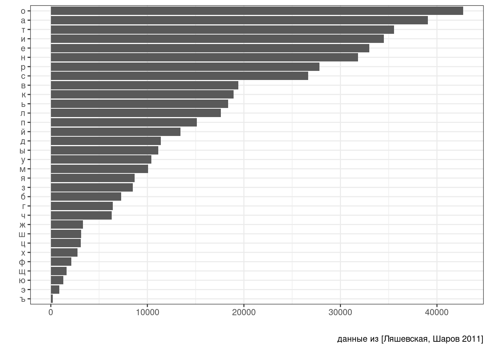

12 Работа со списками
library(tidyverse)12.1 Что такое списки?
Мы обсуждали в разделе @ref{list} тип данных список, и все особенности их синтаксиса:
x <- list(m = "a", n = c(2, 4), o = c("blue", "green", "red"))
x$m
[1] "a"
$n
[1] 2 4
$o
[1] "blue" "green" "red" x$m[1] "a"x[1]$m
[1] "a"x[[2]][1] 2 4x[[2]][2][1] 4
Списки вне R обычно хранят в файлах типа .json (по-английски говорят с ударением на первый слог, а вот по-русски прижился вариант с ударением на второй слог: джейсо́н) или .xml.
12.1.1 Превращение JSON в список и обратно
Самое важное, что нужно знать, про .json, это то, что там могут хранится:
- пары ключ и значение, заключенные в фигурные скобки
{"ключ":"значение"} - упорядочные множества значений, заключенные в квадратные скобки
["значение_1","значение_2",...] - некоторые другие типы данных
Чтение и запись .json файлов осуществляется при помощи пакета jsonlite (не входит в tidyverse). Для примера скачаем датасет 30 героев Игры престолов, который Дж. Р. Р. Мартин достал с ресурса An API of Ice And Fire.
got_chars <- jsonlite::read_json("https://raw.githubusercontent.com/agricolamz/DS_for_DH/master/data/got_chars.json")
got_chars[1][[1]]
[[1]]$url
[1] "https://www.anapioficeandfire.com/api/characters/1022"
[[1]]$id
[1] 1022
[[1]]$name
[1] "Theon Greyjoy"
[[1]]$gender
[1] "Male"
[[1]]$culture
[1] "Ironborn"
[[1]]$born
[1] "In 278 AC or 279 AC, at Pyke"
[[1]]$died
[1] ""
[[1]]$alive
[1] TRUE
[[1]]$titles
[[1]]$titles[[1]]
[1] "Prince of Winterfell"
[[1]]$titles[[2]]
[1] "Captain of Sea Bitch"
[[1]]$titles[[3]]
[1] "Lord of the Iron Islands (by law of the green lands)"
[[1]]$aliases
[[1]]$aliases[[1]]
[1] "Prince of Fools"
[[1]]$aliases[[2]]
[1] "Theon Turncloak"
[[1]]$aliases[[3]]
[1] "Reek"
[[1]]$aliases[[4]]
[1] "Theon Kinslayer"
[[1]]$father
[1] ""
[[1]]$mother
[1] ""
[[1]]$spouse
[1] ""
[[1]]$allegiances
[1] "House Greyjoy of Pyke"
[[1]]$books
[[1]]$books[[1]]
[1] "A Game of Thrones"
[[1]]$books[[2]]
[1] "A Storm of Swords"
[[1]]$books[[3]]
[1] "A Feast for Crows"
[[1]]$povBooks
[[1]]$povBooks[[1]]
[1] "A Clash of Kings"
[[1]]$povBooks[[2]]
[1] "A Dance with Dragons"
[[1]]$tvSeries
[[1]]$tvSeries[[1]]
[1] "Season 1"
[[1]]$tvSeries[[2]]
[1] "Season 2"
[[1]]$tvSeries[[3]]
[1] "Season 3"
[[1]]$tvSeries[[4]]
[1] "Season 4"
[[1]]$tvSeries[[5]]
[1] "Season 5"
[[1]]$tvSeries[[6]]
[1] "Season 6"
[[1]]$playedBy
[1] "Alfie Allen"Так как jsonlite конфликтует в одной функции с tidyverse, я не загружаю библиотеку полностью при помощи команды library(jsonlite), а обращаюсь к функциям пакета при помощи выражения jsonlite::...(). Пакет jsonlite позволяет записывать .json файлы при помощи функции write_json():
jsonlite::write_json(got_chars, "got_chars.json", auto_unbox = TRUE)
# аргумент auto_unbox позволяет сохранять структуру, которую мы видим в R12.1.2 Превращение .xml в список и обратно
Самое важное, что нужно знать, про .xml, это то, что этот формат представляет собой набор некоторых сущностей, которые кодируются при помощи двух тегов: открывающего <...> и закрывающего </...>.
<blablabla>Hello, world!</blablabla>Набор сущностей может быть любым, а главное, нет фиксированного набора сущностей — пользователи могут сочинять свои стандарты, используя .xml. Кроме того, у сущностей, могут быть свои атрибуты, которые перечисляются в открывающем теге:
<ingredient amount="3" unit="стакан">Мука</ingredient>
<ingredient amount="0.25" unit="грамм">Дрожжи</ingredient>
<ingredient amount="1.5" unit="стакан">Тёплая вода</ingredient>Чтение и запись .xml файла осущетсвляется при помощи функций read_xml() и write_xml() из пакета xml2:
library("xml2")
xml_example <- read_xml('<body>
<ingredient amount="3" unit="стакан">Мука</ingredient>
<ingredient amount="0.25" unit="грамм">Дрожжи</ingredient>
<ingredient amount="1.5" unit="стакан">Тёплая вода</ingredient>
</body>')
xml_example{xml_document}
<body>
[1] <ingredient amount="3" unit="стакан">Мука</ingredient>
[2] <ingredient amount="0.25" unit="грамм">Дрожжи</ingredient>
[3] <ingredient amount="1.5" unit="стакан">Тёплая вода</ingredient>write_xml(xml_example, "path/to/the/file.xml")Чтобы избавиться от тегов и превратить прочитанное в список используется команда
xml_example <- as_list(xml_example)
xml_example$body
$body$ingredient
$body$ingredient[[1]]
[1] "Мука"
attr(,"amount")
[1] "3"
attr(,"unit")
[1] "стакан"
$body$ingredient
$body$ingredient[[1]]
[1] "Дрожжи"
attr(,"amount")
[1] "0.25"
attr(,"unit")
[1] "грамм"
$body$ingredient
$body$ingredient[[1]]
[1] "Тёплая вода"
attr(,"amount")
[1] "1.5"
attr(,"unit")
[1] "стакан"Теперь полученная переменная уже является списком:
xml_example$body[[2]][[1]]
[1] "Дрожжи"
attr(,"amount")
[1] "0.25"
attr(,"unit")
[1] "грамм"Здесь также нужно отметить, некоторое важное отличие .xml и .json, которое видно в рассматриваемом примере: атрибуты, которые прописываются в открывающем теге, передаются и в список в R. Функция attributes() возвращает список атрибутов и их значений:
xml_example$body[[2]] %>%
attributes()$amount
[1] "0.25"
$unit
[1] "грамм"Если нужен конкретный аттрибут, то нужно использовать функцию attr():
xml_example$body[[2]] %>%
attr("amount")[1] "0.25"Также на данном примере видна самая большая проблема при работе с .xml: в нашем списке есть три узла под названием ingredient, так что хоть эти узлы и имеют имя, к ним все равно нужно обращаться по индексу.
12.1.3 Просмотр списков в R
Просмоторщик списков встроен в RStudio. Его можно увидеть, если ткнуть в объект в R или написать команду View(got_chars). Альтернативой может стать функция jsonedit() из пакета listviewer. Кроме того, что-то можно попробовать выяснить, используя функцию str().
str(got_chars[1])List of 1
$ :List of 18
..$ url : chr "https://www.anapioficeandfire.com/api/characters/1022"
..$ id : int 1022
..$ name : chr "Theon Greyjoy"
..$ gender : chr "Male"
..$ culture : chr "Ironborn"
..$ born : chr "In 278 AC or 279 AC, at Pyke"
..$ died : chr ""
..$ alive : logi TRUE
..$ titles :List of 3
.. ..$ : chr "Prince of Winterfell"
.. ..$ : chr "Captain of Sea Bitch"
.. ..$ : chr "Lord of the Iron Islands (by law of the green lands)"
..$ aliases :List of 4
.. ..$ : chr "Prince of Fools"
.. ..$ : chr "Theon Turncloak"
.. ..$ : chr "Reek"
.. ..$ : chr "Theon Kinslayer"
..$ father : chr ""
..$ mother : chr ""
..$ spouse : chr ""
..$ allegiances: chr "House Greyjoy of Pyke"
..$ books :List of 3
.. ..$ : chr "A Game of Thrones"
.. ..$ : chr "A Storm of Swords"
.. ..$ : chr "A Feast for Crows"
..$ povBooks :List of 2
.. ..$ : chr "A Clash of Kings"
.. ..$ : chr "A Dance with Dragons"
..$ tvSeries :List of 6
.. ..$ : chr "Season 1"
.. ..$ : chr "Season 2"
.. ..$ : chr "Season 3"
.. ..$ : chr "Season 4"
.. ..$ : chr "Season 5"
.. ..$ : chr "Season 6"
..$ playedBy : chr "Alfie Allen"str(got_chars[1], max.level = 2)List of 1
$ :List of 18
..$ url : chr "https://www.anapioficeandfire.com/api/characters/1022"
..$ id : int 1022
..$ name : chr "Theon Greyjoy"
..$ gender : chr "Male"
..$ culture : chr "Ironborn"
..$ born : chr "In 278 AC or 279 AC, at Pyke"
..$ died : chr ""
..$ alive : logi TRUE
..$ titles :List of 3
..$ aliases :List of 4
..$ father : chr ""
..$ mother : chr ""
..$ spouse : chr ""
..$ allegiances: chr "House Greyjoy of Pyke"
..$ books :List of 3
..$ povBooks :List of 2
..$ tvSeries :List of 6
..$ playedBy : chr "Alfie Allen"str(xml_example)List of 1
$ body:List of 3
..$ ingredient:List of 1
.. ..$ : chr "Мука"
.. ..- attr(*, "amount")= chr "3"
.. ..- attr(*, "unit")= chr "стакан"
..$ ingredient:List of 1
.. ..$ : chr "Дрожжи"
.. ..- attr(*, "amount")= chr "0.25"
.. ..- attr(*, "unit")= chr "грамм"
..$ ingredient:List of 1
.. ..$ : chr "Тёплая вода"
.. ..- attr(*, "amount")= chr "1.5"
.. ..- attr(*, "unit")= chr "стакан"12.2 Пакет purrr
В tidyverse встроен пакет purrr, который среди прочего позволяет работать со списками. Существует cheat sheet по purrr.
12.2.1 Функция map() и map...()
Можно выводить значения в списке на основе имени:
got_chars %>%
map("name")[[1]]
[1] "Theon Greyjoy"
[[2]]
[1] "Tyrion Lannister"
[[3]]
[1] "Victarion Greyjoy"
[[4]]
[1] "Will"
[[5]]
[1] "Areo Hotah"
[[6]]
[1] "Chett"
[[7]]
[1] "Cressen"
[[8]]
[1] "Arianne Martell"
[[9]]
[1] "Daenerys Targaryen"
[[10]]
[1] "Davos Seaworth"
[[11]]
[1] "Arya Stark"
[[12]]
[1] "Arys Oakheart"
[[13]]
[1] "Asha Greyjoy"
[[14]]
[1] "Barristan Selmy"
[[15]]
[1] "Varamyr"
[[16]]
[1] "Brandon Stark"
[[17]]
[1] "Brienne of Tarth"
[[18]]
[1] "Catelyn Stark"
[[19]]
[1] "Cersei Lannister"
[[20]]
[1] "Eddard Stark"
[[21]]
[1] "Jaime Lannister"
[[22]]
[1] "Jon Connington"
[[23]]
[1] "Jon Snow"
[[24]]
[1] "Aeron Greyjoy"
[[25]]
[1] "Kevan Lannister"
[[26]]
[1] "Melisandre"
[[27]]
[1] "Merrett Frey"
[[28]]
[1] "Quentyn Martell"
[[29]]
[1] "Samwell Tarly"
[[30]]
[1] "Sansa Stark"Можно выводить значения в списке на основе индекса:
got_chars %>%
map(3)[[1]]
[1] "Theon Greyjoy"
[[2]]
[1] "Tyrion Lannister"
[[3]]
[1] "Victarion Greyjoy"
[[4]]
[1] "Will"
[[5]]
[1] "Areo Hotah"
[[6]]
[1] "Chett"
[[7]]
[1] "Cressen"
[[8]]
[1] "Arianne Martell"
[[9]]
[1] "Daenerys Targaryen"
[[10]]
[1] "Davos Seaworth"
[[11]]
[1] "Arya Stark"
[[12]]
[1] "Arys Oakheart"
[[13]]
[1] "Asha Greyjoy"
[[14]]
[1] "Barristan Selmy"
[[15]]
[1] "Varamyr"
[[16]]
[1] "Brandon Stark"
[[17]]
[1] "Brienne of Tarth"
[[18]]
[1] "Catelyn Stark"
[[19]]
[1] "Cersei Lannister"
[[20]]
[1] "Eddard Stark"
[[21]]
[1] "Jaime Lannister"
[[22]]
[1] "Jon Connington"
[[23]]
[1] "Jon Snow"
[[24]]
[1] "Aeron Greyjoy"
[[25]]
[1] "Kevan Lannister"
[[26]]
[1] "Melisandre"
[[27]]
[1] "Merrett Frey"
[[28]]
[1] "Quentyn Martell"
[[29]]
[1] "Samwell Tarly"
[[30]]
[1] "Sansa Stark"Достаточно полезно знать о функции unlist(), которая “убивает” все сложную структуру:
got_chars %>%
map("name") %>%
unlist() [1] "Theon Greyjoy" "Tyrion Lannister" "Victarion Greyjoy"
[4] "Will" "Areo Hotah" "Chett"
[7] "Cressen" "Arianne Martell" "Daenerys Targaryen"
[10] "Davos Seaworth" "Arya Stark" "Arys Oakheart"
[13] "Asha Greyjoy" "Barristan Selmy" "Varamyr"
[16] "Brandon Stark" "Brienne of Tarth" "Catelyn Stark"
[19] "Cersei Lannister" "Eddard Stark" "Jaime Lannister"
[22] "Jon Connington" "Jon Snow" "Aeron Greyjoy"
[25] "Kevan Lannister" "Melisandre" "Merrett Frey"
[28] "Quentyn Martell" "Samwell Tarly" "Sansa Stark" Для этого есть и отдельные функции, которые позволяют превратить все в вектор заданного типа:
got_chars %>%
map_chr("name") [1] "Theon Greyjoy" "Tyrion Lannister" "Victarion Greyjoy"
[4] "Will" "Areo Hotah" "Chett"
[7] "Cressen" "Arianne Martell" "Daenerys Targaryen"
[10] "Davos Seaworth" "Arya Stark" "Arys Oakheart"
[13] "Asha Greyjoy" "Barristan Selmy" "Varamyr"
[16] "Brandon Stark" "Brienne of Tarth" "Catelyn Stark"
[19] "Cersei Lannister" "Eddard Stark" "Jaime Lannister"
[22] "Jon Connington" "Jon Snow" "Aeron Greyjoy"
[25] "Kevan Lannister" "Melisandre" "Merrett Frey"
[28] "Quentyn Martell" "Samwell Tarly" "Sansa Stark" got_chars %>%
map_int("id") [1] 1022 1052 1074 1109 1166 1267 1295 130 1303 1319 148 149 150 168 2066
[16] 208 216 232 238 339 529 576 583 60 605 743 751 844 954 957got_chars %>%
map_lgl("alive") [1] TRUE TRUE TRUE FALSE TRUE FALSE FALSE TRUE TRUE TRUE TRUE FALSE
[13] TRUE TRUE FALSE TRUE TRUE FALSE TRUE FALSE TRUE TRUE TRUE TRUE
[25] FALSE TRUE FALSE FALSE TRUE TRUEМожно даже создать новый датафрейм:
got_chars %>%
tibble(name = map_chr(., "name"), # точка обозначает, в какой аргумент должно все пайпиться
id = map_dbl(., "id"),
alive = map_lgl(., "alive"))У этого метода есть один недостаток: если среди значений есть значени null, то функции map_...() их пропускают. В результате получаются векторы разной длины и датафрейм не получается. Чтобы избежать этой проблемы все функции map_...() имеют аргумент .null, в который можно записать значение, которое появится в пустых ячейках, например, .null = NA.
Также существует способ создание датафреймов на основе вектора значений при помощи функции enframe():
got_chars %>%
map_chr("name") %>%
enframe()
Скачайте частотный словарь русского языка [Шаров, Ляшевская 2011], разбейте столбец lemma на буквы при помощи функции str_split(dict$lemma, ""), а на основе полученного списка постройте график, на котором изображено, сколько раз встретилась какая буква:

Также можно использовать комбинацию функции map() и attr_getter() чтобы доставать все значения аттрибутов:
xml_example$body %>%
map(attr_getter("amount"))$ingredient
[1] "3"
$ingredient
[1] "0.25"
$ingredient
[1] "1.5"12.2.2 Фильтрация списков
Если в списке есть логические выражения, их можно использовать как фильтры. Например, вот так мы оставим только живых героев:
got_chars %>%
keep("alive") %>%
map_chr("name") [1] "Theon Greyjoy" "Tyrion Lannister" "Victarion Greyjoy"
[4] "Areo Hotah" "Arianne Martell" "Daenerys Targaryen"
[7] "Davos Seaworth" "Arya Stark" "Asha Greyjoy"
[10] "Barristan Selmy" "Brandon Stark" "Brienne of Tarth"
[13] "Cersei Lannister" "Jaime Lannister" "Jon Connington"
[16] "Jon Snow" "Aeron Greyjoy" "Melisandre"
[19] "Samwell Tarly" "Sansa Stark" 
А так – только мертвых:
got_chars %>%
discard("alive") %>%
map_chr("name") [1] "Will" "Chett" "Cressen" "Arys Oakheart"
[5] "Varamyr" "Catelyn Stark" "Eddard Stark" "Kevan Lannister"
[9] "Merrett Frey" "Quentyn Martell"
Также есть особый фильтр head_while() и tail_while(), который выделяет единицы (с начала и конца) до первого FALSE.
got_chars %>%
head_while("alive") %>%
map_chr("name")[1] "Theon Greyjoy" "Tyrion Lannister" "Victarion Greyjoy"got_chars %>%
tail_while("alive") %>%
map_chr("name")[1] "Samwell Tarly" "Sansa Stark" 
Если все еще не понятно, взгляните на нашу таблицу:
got_chars %>%
tibble(name = map_chr(., "name"), # точка обозначает, в какой аргумент должно все пайпиться
alive = map_lgl(., "alive"))12.2.3 Операции со списками
Рассмотрим простой пример:
my_l <- list(a = 1:3, b = c("a", "b"), c = list("z", c(8, 9)))
my_l$a
[1] 1 2 3
$b
[1] "a" "b"
$c
$c[[1]]
[1] "z"
$c[[2]]
[1] 8 9Как уже говорилось выше, функция unlist() линеаризует списки, превращая их в векторы:
my_l %>%
unlist() a1 a2 a3 b1 b2 c1 c2 c3
"1" "2" "3" "a" "b" "z" "8" "9" Получился поименнованный вектор, если этого недостаточно, можно уничтожить и имена при помощи функции unname():
my_l %>%
unlist() %>%
unname()[1] "1" "2" "3" "a" "b" "z" "8" "9"Функция flatten позволяет уничтожить лишь один, верхний,, уровень иерархии:
my_l %>%
flatten()[[1]]
[1] 1
[[2]]
[1] 2
[[3]]
[1] 3
[[4]]
[1] "a"
[[5]]
[1] "b"
[[6]]
[1] "z"
[[7]]
[1] 8 9
Как видно из этого примера, первый элемент списка my_l превратился в три первых элемента списка, а вот подсписок c = list("z", c(8, 9)) превратился в элемент z и вектор c(8, 9).
Существуют также функции append() и prepend(), которые позволяют добавлять новый посписок после (или до) старого:
list(c(1, 2), c("a", "b", "c")) %>%
append(list(new = c(TRUE, FALSE)))[[1]]
[1] 1 2
[[2]]
[1] "a" "b" "c"
$new
[1] TRUE FALSElist(c(1, 2), c("a", "b", "c")) %>%
prepend(list(new = c(TRUE, FALSE)))$new
[1] TRUE FALSE
[[2]]
[1] 1 2
[[3]]
[1] "a" "b" "c"Существует также функции cross() и cross2(), которые позволяют получить уникальные комбинации объектов из двух списков:
list(c("a", "b"), 1:3) %>%
cross() %>%
str()List of 6
$ :List of 2
..$ : chr "a"
..$ : int 1
$ :List of 2
..$ : chr "b"
..$ : int 1
$ :List of 2
..$ : chr "a"
..$ : int 2
$ :List of 2
..$ : chr "b"
..$ : int 2
$ :List of 2
..$ : chr "a"
..$ : int 3
$ :List of 2
..$ : chr "b"
..$ : int 3list("a", "b") %>%
cross2(1:3) %>%
str()List of 6
$ :List of 2
..$ : chr "a"
..$ : int 1
$ :List of 2
..$ : chr "b"
..$ : int 1
$ :List of 2
..$ : chr "a"
..$ : int 2
$ :List of 2
..$ : chr "b"
..$ : int 2
$ :List of 2
..$ : chr "a"
..$ : int 3
$ :List of 2
..$ : chr "b"
..$ : int 3
Скачайте пьесу “Ревизор”, размеченную в TEI формате и постройте представленный ниже график, на котором изображено количество реплик для каждого персонажа. Превратив данные в список, лучше начинать работать с переменной revizor$TEI$text$body:

Вот cheatsheet по теории вероятности.